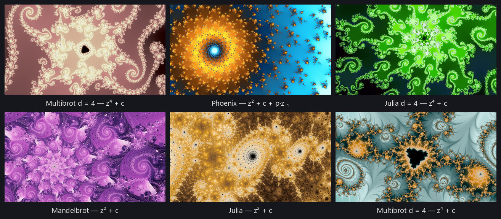
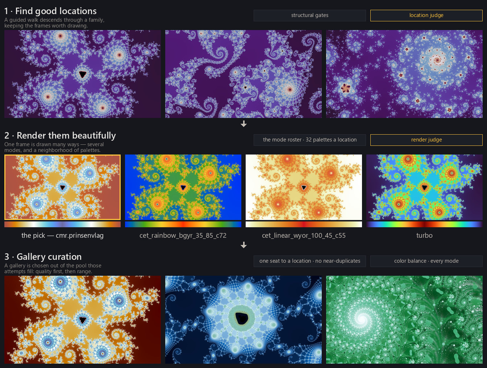

For many years my desktop background has cycled through a collection of fractal wallpapers gathered from around the internet — but seeing the same wallpapers over and over grew a bit repetitive, so I've spent some time thinking about writing a program to automatically find, colorize, and stylize fractals. A great fractal wallpaper is the product of several artistic stages — choosing a location and a framing, picking and aligning palettes, stylizing, clever post-processing — craft that is usually done by hand, in tools like UltraFractal or Chaotica. This project doesn't try to match that level of hand-tuned artistry on any single image. The goal is a system that produces a rich and growing set of good wallpapers, spanning a wide range of structures, fractal families, color styles, and rendering effects. Drawing a fractal turns out to be the easy half of that. The hard part is deciding where to point the camera, and most of this site is about that decision. Everything on this site lives in the flat complex plane — two-dimensional escape-time fractals. There are other beautiful fractal worlds this project doesn't touch, among them the 3D Mandelbulb, fractal flames, and quaternion Julia sets rendered in four dimensions.
Everything here is backed by a working open-source repository, fractal-wallpapers, and every image on this site came out of it. The same renderer is also compiled to run in a browser, so the fractal explorer draws these fractals live on this site — every family, every rendering mode, every palette, panned and zoomed by hand — and nearly every picture on these pages carries a link that opens the explorer at exactly the view you are looking at. You can also run the project yourself, browse the galleries, download collections of my favorite wallpapers at full resolution, freely use the trained models and the labeled datasets behind them, or read on for more technical details.
Making this work means answering a few genuinely interesting questions. Where in an infinite plane do you point the camera — and how far do you zoom — to find a beautiful fractal? Given a view, which of many possible rendering styles and palettes will suit it? And out of thousands of candidates, which handful is worth keeping? The system that answers them is a pipeline, and the rest of this site walks through it stage by stage:

Search — a guided walk through each fractal family descends toward structure and away from both emptiness and pure chaos, scoring neighborhoods as it goes with a small neural network trained on my labels for what makes promising wallpaper material (finding good locations, training judges). Render — each promising location is drawn at high quality in one of a catalog of rendering modes, from the classic smooth coloring to stranger styles (rendering fundamentals, rendering modes). Color — a palette is chosen to suit the image and its tones are balanced automatically (color palettes). Select — finished renders are scored by judges trained on my ratings, and a final set is chosen for quality and diversity — avoiding twenty near-duplicates of the single best view or a single class of color styles (from locations to wallpapers).
Each section is written to be readable independently. Nothing here requires more than a single desktop machine with one ordinary GPU. The whole system — search, rendering, training, selection — was built to run overnight on fairly standard hardware. All my fractals are rendered at 2560×1440 with heavy supersampling, but it's easy to re-render at different resolutions.